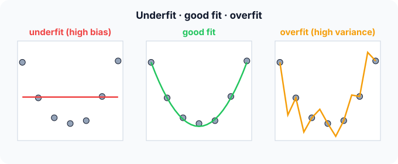

Prerequisites
- MSE.
- Mean and variance.
- The idea of training data versus new (test) data.
The analogy
Everyday analogy
Think of archers. One archer always hits the same spot, but it's left of the bullseye: consistent but wrong (high bias). Another hits all around the bullseye, scattered everywhere: right on average but unreliable (high variance).
A good model is the archer with a tight group around the centre. Making a model more flexible moves it from the first archer towards the second.
How it works
Notation: the true relationship is $f(x)$; the data is $y = f(x) + \varepsilon$ with noise $\varepsilon$ of variance $\sigma^2$; $\hat f$ is the model learned from one training sample.
Start with three fits on the same data
Seven points roughly on a U shape (lowest near $x = 3$). Predict, then open "Check".
Example: predict before you read
Step 1. A horizontal line at the mean. Predict its training error and its error on new points.
Check
Both are high, and similar: it can't bend, so it misses the U everywhere. That's high bias, underfitting.
Step 2. Cover the next line and guess: a polynomial wiggly enough to pass through all 7 points. Training error? Error on a new point at $x = 3.5$?
Check
Training error 0. But between the points it swings wildly (down to 0.3 at $x = 3.5$, while the true value is about 1.1). High variance, overfitting.
Step 3. A smooth U-shaped curve. Predict its errors.
Check
Small training error (not zero, since it ignores the noise) and the smallest error on new points: the best trade-off.

Quick recall: Before reading further, cover the text above and say out loud: which model has high bias and which has high variance?
Check your answer
The flat line has high bias (too simple); the wiggly curve has high variance (it follows the noise of this particular sample).
Finish the picture: bias and variance in numbers
At $x = 2$ the true value is 4. Train five models on five different samples and look at their predictions there.
- Simple models predict 3.0, 3.2, 2.8, 3.1, 2.9. Predict their average, bias² and variance.
Check
Average 3.0, so bias² = (3 − 4)² = 1; variance = 0.02. Consistent but wrong.
- Complex models predict 4.8, 3.1, 5.2, 2.9, 4.0. Predict the same three numbers.
Check
Average 4.0, so bias² = 0; variance = 0.82. Right on average, but any single model can be far off.
Quick recall: Without scrolling up, say out loud: in the archer numbers, which group of models has the smaller bias, and which the smaller variance?
Check your answer
The complex models have almost no bias (average 4.0, the truth) but variance 0.82; the simple models have bias² 1 but variance only 0.02.
Full worked calculation
The page's experiment at $x = 2$, where the true value is $f(2) = 4$. Five simple models and five complex models were each trained on a different sample. We compute bias² and variance for both, check that they add up to the real error, add noise, and see what averaging the complex models does.
| Sample | Simple $\hat f$ | Simple error² | Complex $\hat f$ | Complex error² |
|---|---|---|---|---|
| 1 | 3.0 | 1.00 | 4.8 | 0.64 |
| 2 | 3.2 | 0.64 | 3.1 | 0.81 |
| 3 | 2.8 | 1.44 | 5.2 | 1.44 |
| 4 | 3.1 | 0.81 | 2.9 | 1.21 |
| 5 | 2.9 | 1.21 | 4.0 | 0.00 |
| Mean | 3.0 | 1.02 | 4.0 | 0.82 |
-
1The average simple model
$$\mathbb E[\hat f(2)] = \frac{3.0 + 3.2 + 2.8 + 3.1 + 2.9}{5} = 3.0$$Averaging over training samples removes the luck of any single dataset. What is left is what the model family systematically predicts.
-
2Bias² of the simple model
$$\big(\mathbb E[\hat f(2)] - f(2)\big)^2 = (3.0 - 4)^2 = 1$$Even on average it is 1 below the truth. A straight line cannot bend to reach the U shape, and more data would not fix that: this is bias.
-
3Variance of the simple model
$$\frac{0^2 + 0.2^2 + (-0.2)^2 + 0.1^2 + (-0.1)^2}{5} = \frac{0.10}{5} = 0.02$$Deviations from its own average (3.0), not from the truth. The five predictions are almost identical: the model barely reacts to which sample it saw.
-
4The complex model: bias²
$$\mathbb E[\hat f(2)] = \frac{4.8 + 3.1 + 5.2 + 2.9 + 4.0}{5} = 4.0 \;\Rightarrow\; \text{bias}^2 = (4.0 - 4)^2 = 0$$On average the flexible model is exactly right. Its shape can follow the true curve.
-
5The complex model: variance
$$\frac{0.8^2 + (-0.9)^2 + 1.2^2 + (-1.1)^2 + 0^2}{5} = \frac{4.10}{5} = 0.82$$But each single model is far off, in a different direction each time, because it also fits the noise of its own sample.
-
6Check: bias² + variance = mean squared error
$$\text{simple: } 1 + 0.02 = 1.02 = \tfrac{1 + 0.64 + 1.44 + 0.81 + 1.21}{5}, \qquad \text{complex: } 0 + 0.82 = 0.82$$Computing the error of each model against the truth directly (the table) gives the same numbers. The decomposition is not an approximation: it is exact.
-
7Add the noise term
$$\sigma^2 = 0.25 \;\Rightarrow\; \text{expected error on new } y: \quad 1.02 + 0.25 = 1.27, \qquad 0.82 + 0.25 = 1.07$$New observations scatter around $f(2)$ with variance $\sigma^2$. No model can predict that part, so 0.25 is a floor under both errors.
-
8Averaging cuts variance
$$\bar f = \tfrac15 \textstyle\sum \hat f_i = 4.0, \qquad \text{Var} \approx \frac{0.82}{5} = 0.164$$If the five complex models' errors are independent, averaging them keeps bias at 0 and divides variance by 5. That is the idea behind bagging and random forests.
What the numbers tell us
Simple models: bias² 1, variance 0.02, total 1.02 (underfit). Complex models: bias² 0, variance 0.82, total 0.82. Here the complex model wins, but only slightly, and each one alone is unreliable.
Total error = bias² + variance + noise. You can trade one for the other by changing model complexity, or reduce variance by averaging; the noise (0.25) never goes away.
The rule in plain words
As model complexity grows, bias falls (it can fit more shapes) and variance rises (it fits the noise of each sample).
Pick the complexity where the error on held-out data is lowest. Regularization and more training data reduce variance without making the model simpler.
Quick recall: Before you read the code, describe how to estimate bias and variance at one point from several trained models, in your own words. Then check below.
Check your answer
Average the models' predictions. Bias is that average minus the true value (squared for bias²). Variance is the average squared distance of each prediction from their average.
The code
Read this code after you have computed the five-model example by hand. It will make more sense.
void bias_variance(double preds[], int k, double truth, double out[]) {
double mean = 0, variance = 0;
for (int i = 0; i < k; i++) mean += preds[i] / k; /* the "average model" */
for (int i = 0; i < k; i++) variance += (preds[i] - mean) * (preds[i] - mean) / k;
out[0] = (mean - truth) * (mean - truth); /* bias squared */
out[1] = variance; /* spread around the average */
}Definition
What you just did, in one line: bias is the error of the average model (too simple to capture the truth), variance is how much the model changes between training samples (too sensitive), and the trade-off is that reducing one tends to increase the other.
flowchart LR
A["simple model"] -->|"more flexibility"| B["balanced model"]
B -->|"more flexibility"| C["complex model"]
A -.- A1["high bias, low variance: underfit"]
B -.- B1["lowest test error"]
C -.- C1["low bias, high variance: overfit"]
Putting numbers on it
Quick recall: Before looking at the formula, predict: can a model have zero expected error if the data is noisy?
Check your answer
No. The noise variance $\sigma^2$ is a floor that no model can go below.
For squared error, the expected error of the learned model at a point splits exactly into three parts:
$$\mathbb{E}\big[(y - \hat f(x))^2\big] \;=\; \underbrace{\big(\mathbb{E}[\hat f(x)] - f(x)\big)^2}_{\text{bias}^2} \;+\; \underbrace{\mathbb{E}\big[(\hat f(x) - \mathbb{E}[\hat f(x)])^2\big]}_{\text{variance}} \;+\; \underbrace{\sigma^2}_{\text{noise}}$$Simple models above: $1 + 0.02 = 1.02$ plus noise. Complex models: $0 + 0.82 = 0.82$ plus noise. Here the complex model wins slightly; with less data its variance would grow.
| Symptom | Training error | Test error | Remedy |
|---|---|---|---|
| Underfitting (high bias) | High | High, close to training | More features, more flexible model, less regularization |
| Overfitting (high variance) | Very low | Much higher than training | More data, regularization, simpler model, early stopping |
| Good fit | Low | Low, close to training | Keep it |
Warning
Never judge complexity by training error alone. It always goes down as the model gets more flexible, right up to zero for a model that memorises the data.
Exam tip
Learn the diagnosis table: big gap between training and test error → variance; both errors high → bias. And name the remedies for each.
Common mistakes
- Fixing overfitting by adding more model capacity.
- Thinking more data reduces bias; it mainly reduces variance.
- Forgetting the irreducible noise term: even the perfect model has error $\sigma^2$.
Try it yourself
Exercise 1 (warm-up)
A model has training error 2% and test error 25%. Bias or variance problem? Name two remedies.
Hint
Look at the gap.
Answer
Variance (overfitting): the gap is huge. Remedies: more training data, regularization, a simpler model, early stopping.
Exercise 2 (a bit harder)
Five models predict 2, 6, 3, 7, 2 at a point whose true value is 4. Compute bias² and variance, and say which dominates. Write your answer down before you open it.
Show answer
Mean = 4, so bias² = 0. Variance = (4 + 4 + 1 + 9 + 4)/5 = 4.4. Variance dominates: the model family is unbiased here but very unstable.
Did you know?
Did you know?
Very large neural networks sometimes show "double descent": test error falls, rises near the point where the model can just memorise the data, then falls again as it grows even larger.
Random forests attack variance directly: averaging many high-variance trees keeps their low bias while cancelling much of their variance.
Key points to remember
If you remember one thing from each line, remember the because.
- Simple models underfit because they cannot represent the true shape, which is bias.
- Complex models overfit because they also fit the noise of their particular training sample, which is variance.
- There is an optimal complexity because bias falls and variance rises as flexibility grows.
- More data mainly helps variance because noise averages out over more examples.
- Some error is unavoidable because the noise $\sigma^2$ is in the data itself.
Self-check questions
Answer these in order, out loud. They follow the page, so your answers become the script of your video.
- How are bias and variance like two archers?
Sample answer
High bias is an archer who always hits the same wrong spot; high variance is one whose arrows are centred but scattered everywhere.
- Compare the flat line, the smooth U and the wiggly curve on the 7 points.
Sample answer
The line underfits (high training and test error), the wiggly curve overfits (zero training error, large test error), the U curve has low error on both.
- Why does the code average the predictions before computing the variance?
A good answer says what variance is measured around.
Sample answer
Variance is the spread of the predictions around their own average, so the average has to be known first; the same average gives the bias.
- So what are bias and variance, in one sentence each?
Sample answer
Bias is how far the average model is from the truth; variance is how much the model changes from one training sample to another.
- Why does making a model more flexible lower bias but raise variance?
A good answer mentions noise.
Sample answer
More flexibility lets it follow the true shape (less bias), but also the random noise of each sample, so different samples give very different models (more variance).
- What three terms make up the expected squared error?
Sample answer
Bias², variance, and the irreducible noise $\sigma^2$.
- Training error 2%, test error 25%: what is wrong and what do you do?
Sample answer
Overfitting (high variance). Add data, regularize, simplify the model or stop training earlier.
- If you had to teach this to a friend in 2 minutes, what would you leave out, and why?
Sample answer
I'd leave out the decomposition formula and double descent. I'd keep the archer analogy, the three fits on the U data, and "too simple = bias, too flexible = variance, pick the middle with test data".
External resources
- scikit-learn: Underfitting vs overfitting: polynomial fits of degree 1, 4 and 15 with code.
- Wikipedia: Bias–variance trade-off: the decomposition and its derivation.
- Google ML Crash Course: Overfitting: generalisation with examples.
Videos
- YouTube search: StatQuest bias and variance: StatQuest's short, clear explanation.